Can you find a single cut point on the \(X\) axis that separates the two classes?
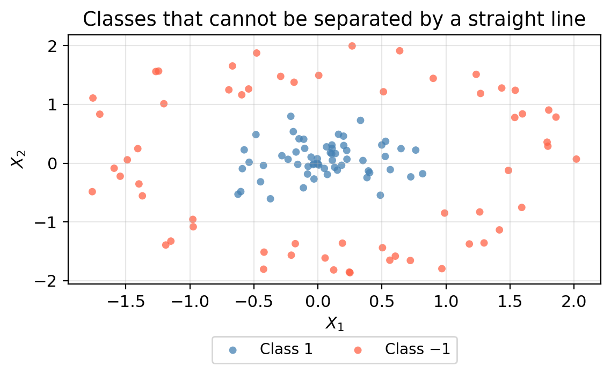
EDS 232
Lesson 9.2
Support vector machines
In this lesson
Augmenting the feature space
The problem
The support vector classifier finds the best linear boundary.
What if no straight line can adequately separate the classes?

Enlarging the feature space
One strategy: add new features constructed from the original predictors.
Instead of fitting an SVC with \(p\) features \(X_1, \ldots, X_p\), use \(2p\) features including squared terms:
\[X_1,\; X_1^2,\; X_2,\; X_2^2,\; \ldots,\; X_p,\; X_p^2.\]
A one-dimensional example
| Obs | \(X\) | Class |
|---|---|---|
| 1 | −3.0 | −1 |
| 2 | −1.5 | −1 |
| 3 | −0.5 | +1 |
| 4 | 0.5 | +1 |
| 5 | 1.5 | −1 |
| 6 | 3.0 | −1 |

Check-in
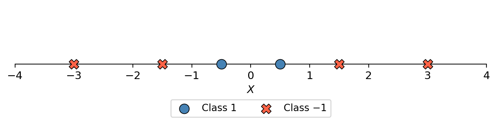
Can you find a single cut point on the \(X\) axis that separates the two classes?
Check-in

Can you find a single cut point on the \(X\) axis that separates the two classes?
No — Class +1 sits in the middle (±0.5) and Class −1 at the extremes. Any single cut point will misclassify one group. We need to augment the feature space.
Adding \(X^2\) as a feature
| Obs | \(X\) | \(X^2\) | Class |
|---|---|---|---|
| 1 | −3.0 | 9.00 | −1 |
| 2 | −1.5 | 2.25 | −1 |
| 3 | −0.5 | 0.25 | +1 |
| 4 | 0.5 | 0.25 | +1 |
| 5 | 1.5 | 2.25 | −1 |
| 6 | 3.0 | 9.00 | −1 |
Each observation is now a point \((X, X^2)\) in a two-dimensional space.

Check-in
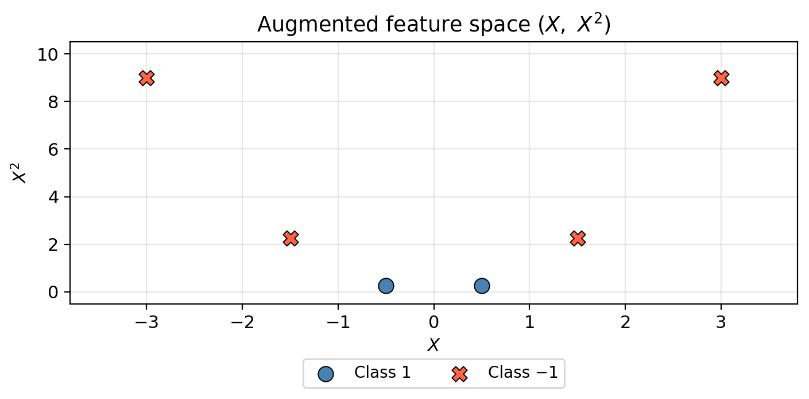
Can the two classes now be separated by a line in the augmented space? Where would you draw it?
Check-in
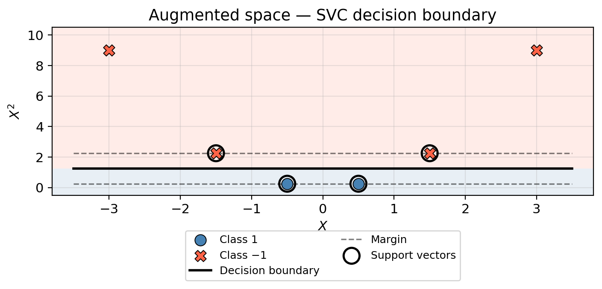
Can the two classes now be separated by a line in the augmented space? Where would you draw it?
Yes — a horizontal line at \(X^2 \approx 1.25\) perfectly separates the classes. The SVC finds this boundary automatically.
Back to the original space
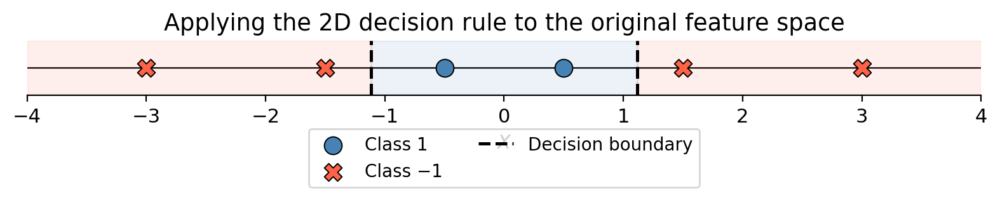
Augmenting the feature space produces a non-linear boundary in the original space — two cut points instead of one — even though the SVC is entirely linear in the enlarged space.
Extending to two dimensions
The same idea applies with two or more predictors.
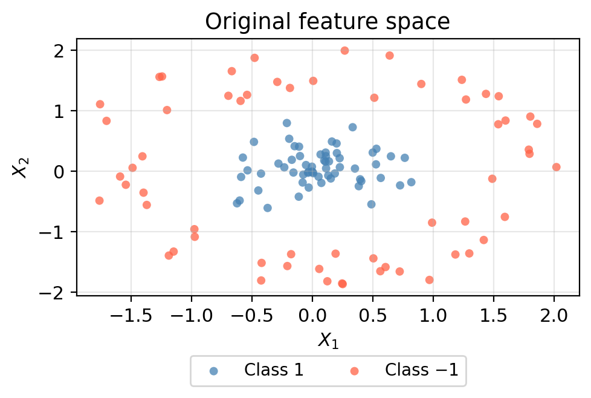
Augmented feature space — 3D
Adding \(X_3 = X_1^2 + X_2^2\): the two classes become linearly separable along the \(X_3\) axis.
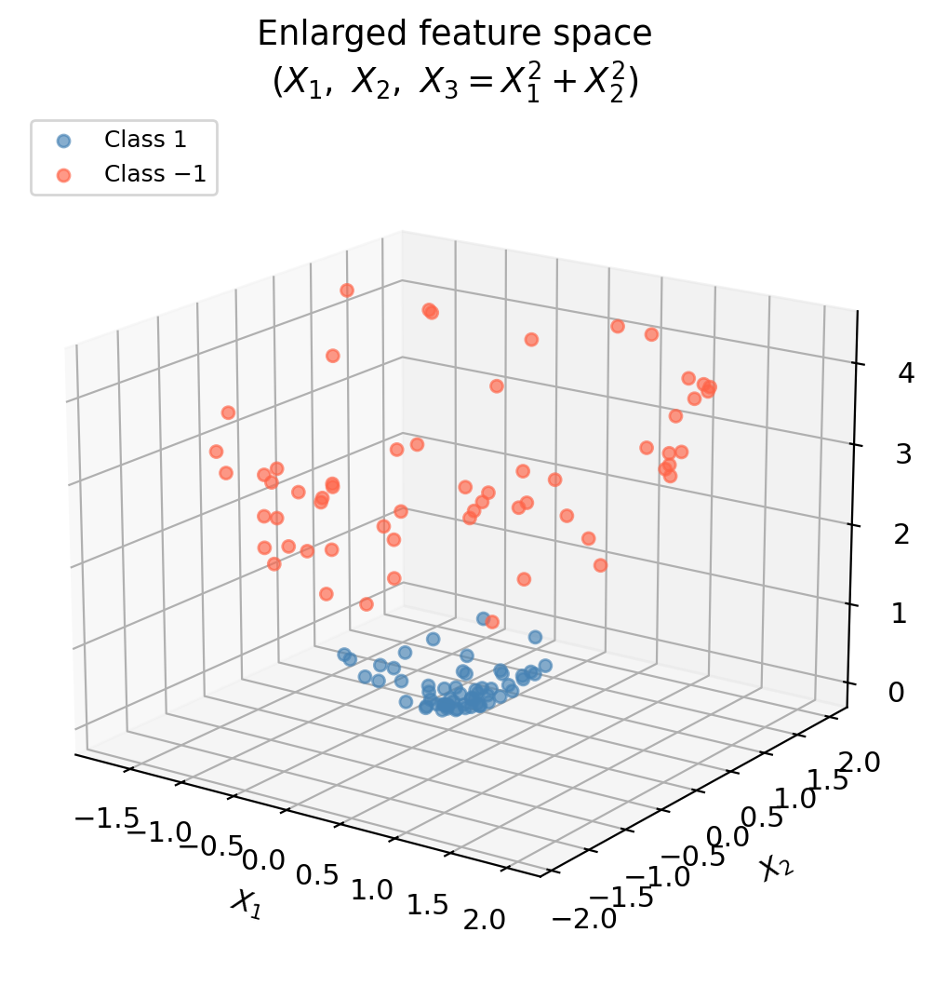
Non-linear boundary in the original space
Evaluating the 3D decision rule in the original 2D space gives a circular boundary.
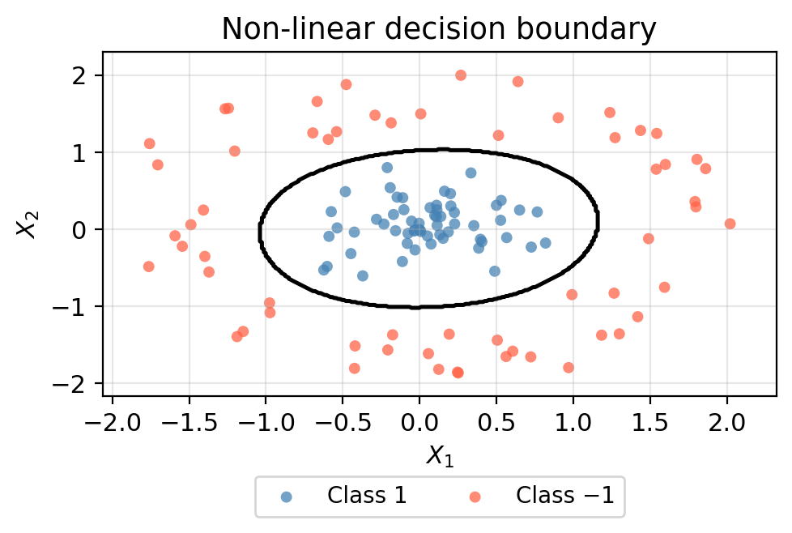
Core idea — and the challenge
Core idea: enlarge the feature space so that a linear SVC in the enlarged space produces a non-linear boundary in the original space. We can use any functions of the predictors — not just squared terms.
The challenge: as the number of predictors \(p\) grows, deciding which additional features to add becomes intractable, and computing them for every observation is expensive.
The solution: the kernel approach computes what we need without ever explicitly constructing the enlarged features.
The support vector machine
The support vector machine
The support vector machine (SVM) extends the SVC by using a kernel function \(K(x_i, x_j)\) to enlarge the feature space in a computationally efficient way.
Choosing a kernel = choosing how to augment the feature space
Kernels
Linear kernel
\[K(x_i, x_j) = \langle x_i, x_j \rangle\]
The linear kernel computes the plain dot product — equivalent to the SVC with no feature augmentation.
| Parameter | What it controls | Default |
|---|---|---|
C |
Penalty for margin violations | 1.0 |
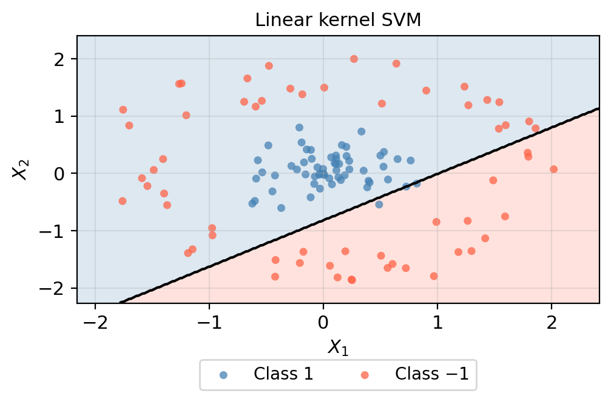
The linear kernel cannot capture the circular structure — no straight line can separate an inner cluster from an outer ring.
Polynomial kernel
\[K(x_i, x_j) = (\gamma \langle x_i, x_j \rangle + r)^d\]
Captures interactions and powers of the original features. A higher degree \(d\) allows the boundary to bend and curve more.
| Parameter | What it controls | Default |
|---|---|---|
degree (\(d\)) |
Polynomial degree; higher → more curved boundary → higher overfitting risk | 3 |
C |
Penalty for margin violations | 1.0 |
coef0 (\(r\)) |
Shifts the polynomial; 1.0 includes lower-degree terms, 0.0 gives a homogeneous polynomial |
0.0 |
degree and C are the main parameters to tune. coef0 should be set to 1.0 as a starting point — the default of 0.0 can produce poor boundaries.
Polynomial kernel — degree 3, coef0 = 1
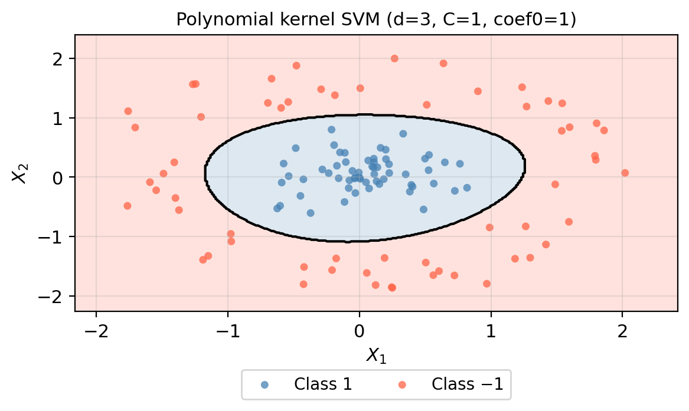
With coef0=1 the polynomial kernel correctly captures the circular structure with a curved boundary.
Check-in
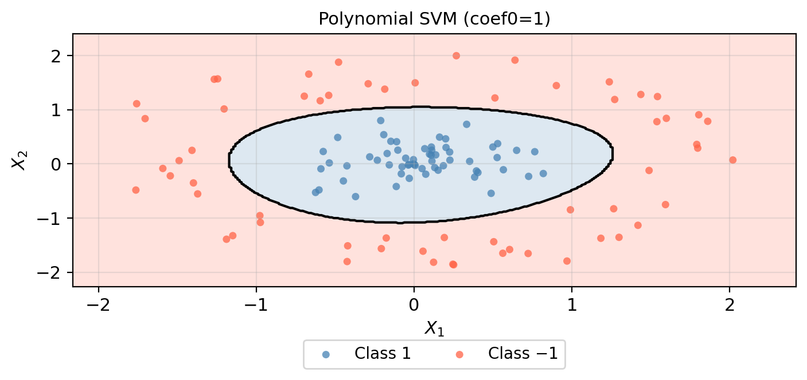
The plot above uses coef0=1. What do you expect the decision boundary to look like if we use the default coef0=0 instead?
Check-in
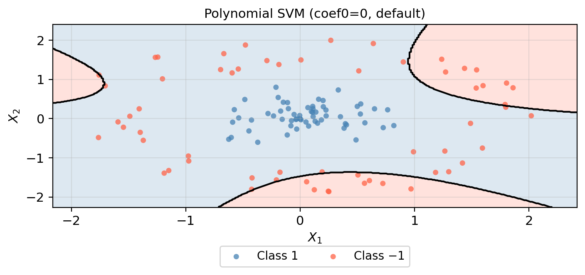
The plot above uses coef0=1. What do you expect the decision boundary to look like if we use the default coef0=0 instead?
Very different! With coef0=0 the polynomial is homogeneous — it only captures multiplicative interactions, not additive ones. The boundary fails to capture the circular structure.
Radial (RBF) kernel
\[K(x_i, x_j) = \exp\!\left(-\gamma \,\|x_i - x_j\|^2\right)\]
Measures proximity: nearby observations are considered similar and each training point’s influence drops off with distance, producing very local and flexible boundaries.
| Parameter | What it controls | Default |
|---|---|---|
C |
Penalty for margin violations | 1.0 |
gamma |
How quickly influence decays with distance; larger → more local fitting → higher overfitting risk | 'scale' |
The RBF kernel is the most flexible of the three and often the best default choice when the boundary shape is unknown. C and gamma should be tuned together via cross-validation.
Radial (RBF) kernel
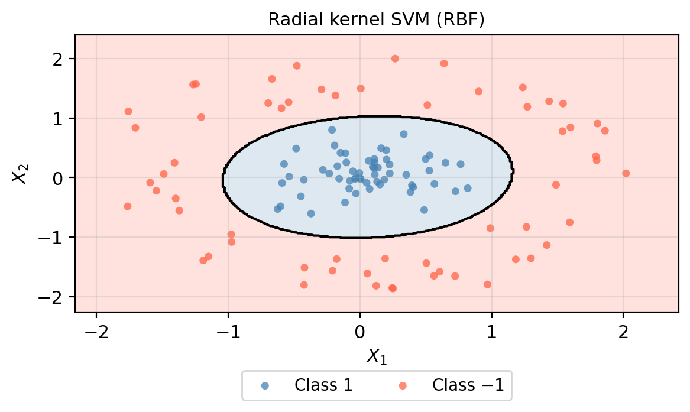
The RBF kernel adapts tightly to the circular structure, producing a smooth, nearly circular decision boundary.
Check-in
What accuracy would you expect from the linear SVM on the circular data? Why can’t it do better?
What is one advantage of the RBF kernel over the polynomial kernel when the data structure is unknown?
How should gamma and C be chosen in practice?
gamma alone.C and gamma should be chosen using cross-validation on the training data (e.g., GridSearchCV). Never select them by evaluating on the test set.Exercise: fire re-occurrence in Southern California chaparral
Exercise: scenario
A research team monitored 200 chaparral shrubland sites following a major wildfire. They recorded:
Response: did the site re-burn within a 10-year window? (re-burned = 1, did not re-burn = 0)
Goal: build a classifier to predict re-burning risk at new, unmonitored sites to prioritize fuel treatments.
Exercise: fire re-occurrence data
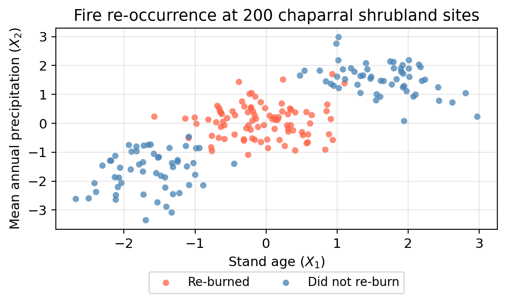
Exercise 1
Look at the scatter plot. Describe the pattern you see. Which combination of stand age and precipitation is most associated with re-burning? Which sites tend not to re-burn?
Re-burning occurs at sites with intermediate stand age and intermediate precipitation — the cluster in the middle of the diagonal. Sites at both extremes (young/dry AND old/wet) tend not to re-burn.
This reflects a fire-conducive window: recently burned sites lack fuel, and chronically wet high-elevation sites are too moist to ignite even when fuel is abundant.
Exercise 2: model comparison
The 200 sites were split 140/60 (train/test). 5-fold CV accuracy on the training set:
| Model | CV accuracy (5-fold) | |
|---|---|---|
| 0 | Logistic regression | 50% |
| 1 | KNN (k = 5) | 96% |
| 2 | Linear SVM | 53% |
| 3 | RBF SVM | 97% |
| 4 | Random forest | 95% |
The linear SVM achieves nearly the same accuracy as logistic regression. What do they have in common that prevents them from capturing this pattern?
Both fit a single linear boundary. Isolating the middle cluster requires two parallel cuts along the diagonal — something no single line can achieve.
Exercise 3: random forest vs. RBF SVM
The random forest achieves similar accuracy to the RBF SVM. What is one practical advantage of the random forest for this application?
The random forest provides feature importances — a measure of how much each variable contributed to predictions. A manager can be told “stand age was the more important predictor,” which is actionable and easy to communicate.
The random forest also usually performs well with minimal hyperparameter tuning.
Exercise 4: effect of \(\gamma\) on the RBF SVM
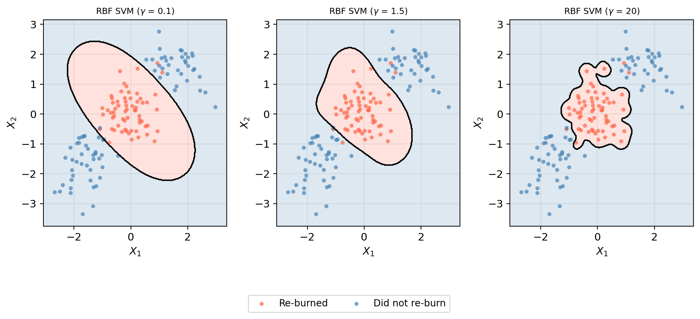
As \(\gamma\) increases, does variance increase or decrease? How would you select the best \(\gamma\)?
Variance increases with \(\gamma\). Small \(\gamma\) → nearly linear (underfitting). Large \(\gamma\) → jagged boundary wrapping individual points (overfitting). Best \(\gamma\) chosen via cross-validation (GridSearchCV), jointly with C.
Exercise 5: interpretability
A fire management agency wants to use the model not just to flag high-risk sites, but also to write a report for state legislators explaining which landscape characteristics drive re-burning risk. An explainable model means a ranger can understand why a site was flagged, not just that it was flagged:
Does this new requirement change your model recommendation?
Yes. For a legislators’ report, logistic regression with an \(X_1 \times X_2\) interaction term is the strongest choice — its coefficients have direct interpretation and adding the interaction recovers much of the accuracy lost by the plain logistic regression. In practice: a random forest for operational flagging + logistic regression with interaction for reporting.